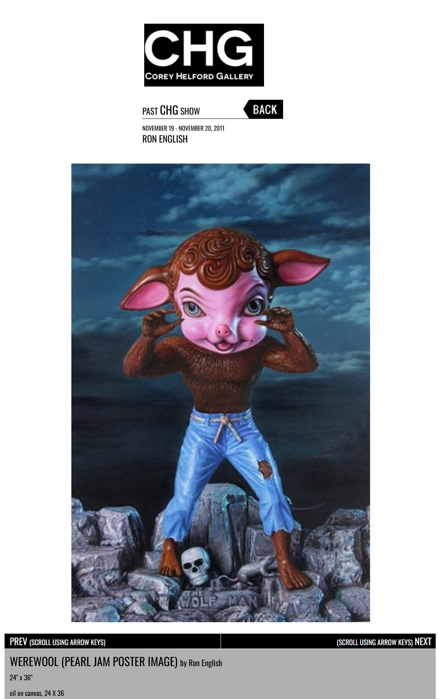
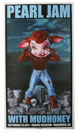
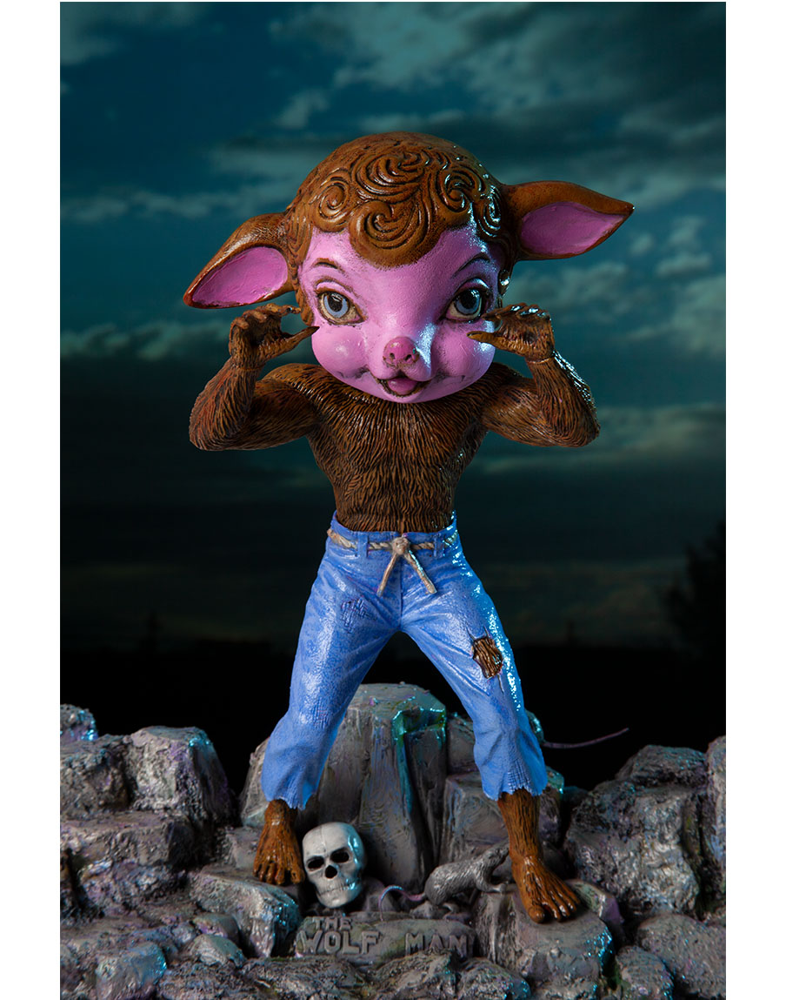

Exhibitions
Seasons In Supurbia, Corey Helford Gallery, Culver City, California, US, November 19–December 10, 2011.
Living in Delusionville, Mesa Contemporary Arts Museum, Mesa Arts Center, Mesa, Arizona, US, September 9, 2022–January 22, 2023.
Literature
Ron English, Original Grin: The Art of Ron English (Paris: Cernunnos, 2019), p. 163. ISBN 978-2374950938.
Notes
Also known as Werewool.
Corey Helford Gallery documents the work under the title Werewool (Pearl Jam Poster Image) in connection with Ron English’s Seasons In Supurbia.
This composition was used for Ron English’s official Pearl Jam with Mudhoney poster / print for the Pacific Coliseum, Vancouver, British Columbia, Canada, September 25, 2011. The related Artsy listing identifies the object as Pearl Jam, gives the size as 35 4/5 × 20 1/10 inches (91 × 51 cm), and describes it as a print.
The work also appears in exhibition photographs for Living in Delusionville at Mesa Contemporary Arts Museum.
Ancillary Documentation
The following materials document the work through gallery documentation, Pearl Jam poster / print documentation, reference material, and later exhibition photography.


